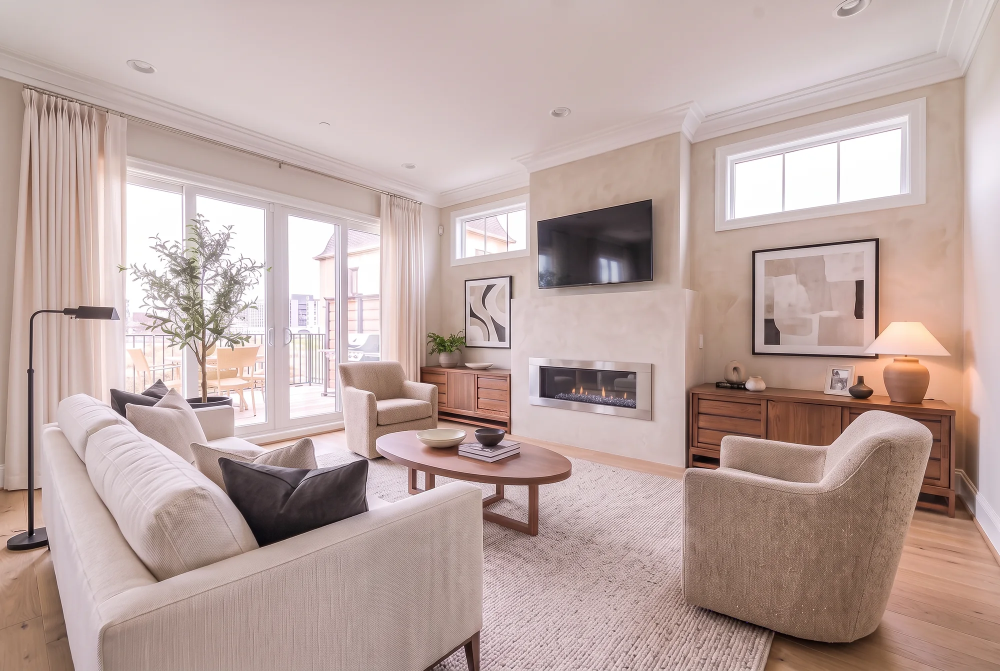

The City Home · Georgetown
One home.
Room for possibility.
Explore a complete direction for the house, return to the original model home, or revisit the ideas that got us here.
Whole-house options
Original reference + 2 developed directions Original reference↗
Original reference↗Original photography
The original Georgetown model home
The builder’s furnished home, preserved as our starting point. Classic trim, warm wood, patterned wallcoverings and statement lighting give each room its original character.
View the original home→
Option 1↗Original Mineral & Walnut · Day + night
Warm modern living, with a boutique-hotel feel
Soft mineral texture, natural oak floors and rich walnut, balanced with ivory textiles, quiet black accents and living greenery. A cohesive house with individual room personalities and practical, phased build-outs.
Explore Option 1→ Option 2↗
Option 2↗Whole-house design · In review
Brown oak, polished stainless, white upholstery, blue & butter yellow
Brown oak and polished stainless connect varied cabinet and console designs, all on solid bases without legs. White Cloud seating, warm stone walls, natural oak floors and off-white drapes frame blue artwork, small butter-yellow accents and plants.
Explore Option 2→The living playbook
Make the design work for your life.
Explore the original Mineral & Walnut design, a room-by-room improvement plan, materials, lighting and a phased path to construction.
The sketchbook
Good ideas start with exploration.
Browse 15 earlier looks, room studies and video tours. These are individual experiments, separate from the coordinated whole-house options above.
Each whole-house option has its own room views and build notes. More directions can join the collection as we explore.